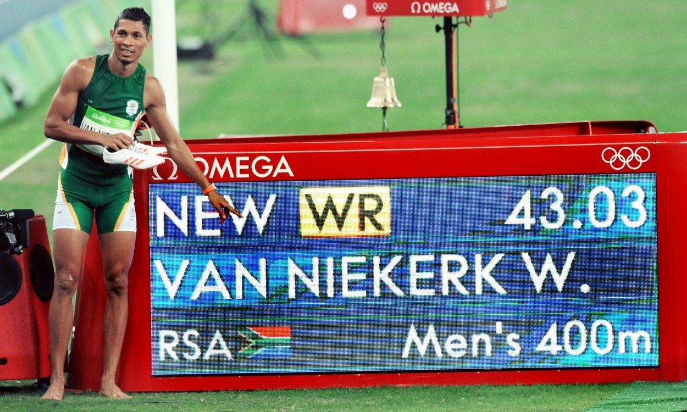
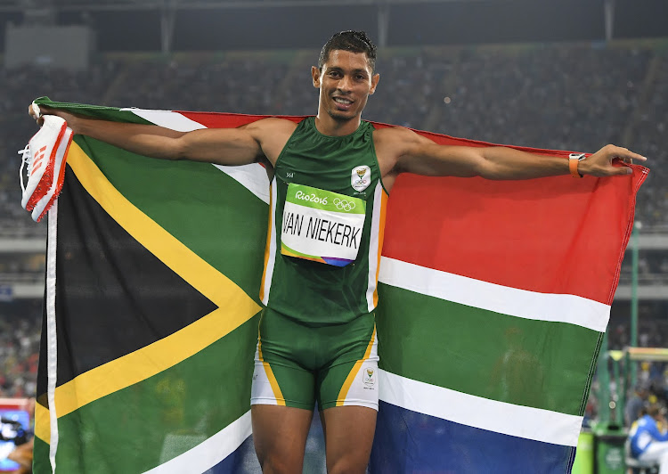
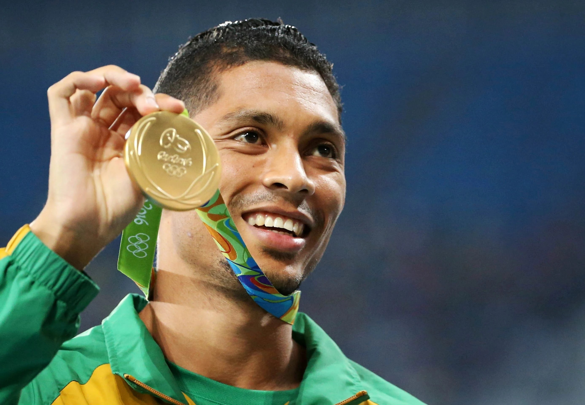
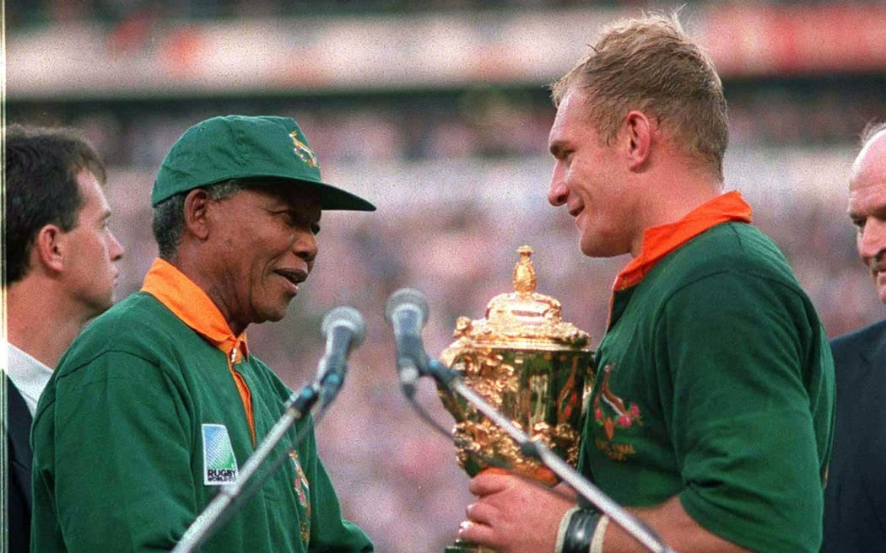
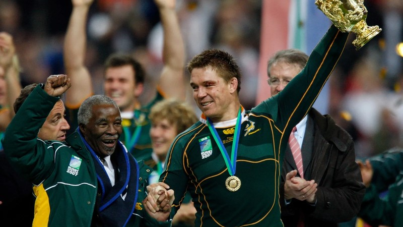
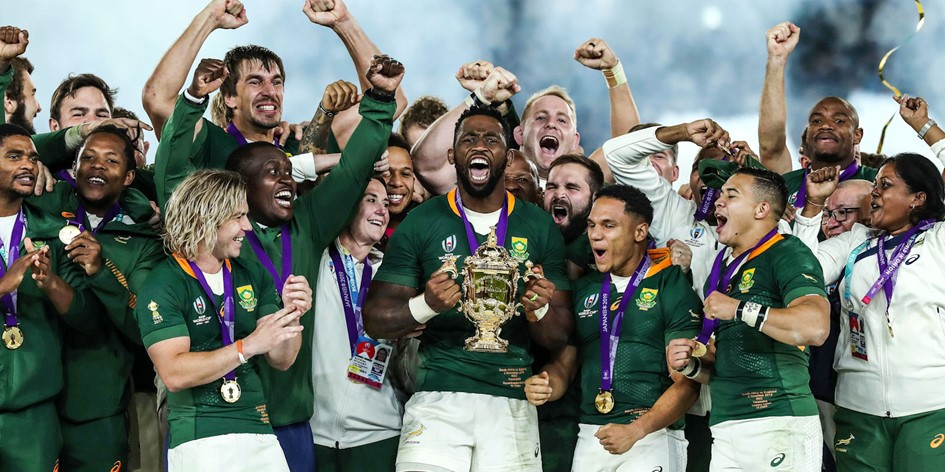

South Africa has held multiple world and African sports records. Here are a few that are still standing at the time of writing this article, 2024.
Wayde van Niekerk - 400m at 2016 Rio Olympics
On August 14, 2016, van Niekerk ran the race in an astonishing 43.03 seconds, breaking the previous world record of 43.18 seconds held by Michael Johnson since 1999.
Van Niekerk's performance was historic for several reasons:
- The Race Strategy: Van Niekerk ran the race in an unconventional way. He started in lane 8, which is typically considered an outside lane with a disadvantage in terms of sighting other competitors but that didn't derail him. He was also known for running the final 100 meters incredibly fast, a part of the race where many athletes start to tire and indeed he showed this as he ran to victory.
- The Split: His splits were impressive, he ran the first 200 meters in 21.60 seconds and finished strong in the final stretch, closing with one of the fastest finishes in the history of the event. This aggressive strategy, coupled with his stamina and sprinting capabilities, contributed to his record-breaking time.
- World Stage: The performance also made him the first South African to win the Olympic gold medal in the 400 meters and the first athlete to break a world record in the event since 1999.
Van Niekerk's world record in the 400 meters remains one of the most iconic moments in track and field history, showcasing a perfect combination of speed, endurance, and tactical brilliance.



South African Springboks - 2023 Paris Rugby World Cup
In Rugby, the Springboks achieved a historic feat by winning their fourth Rugby World Cup title in 2023, making them the most successful team in Rugby World Cup history.
Their captain Siya Kolisi became the first person to captain a team to back-to-back Rugby World Cup victories.
Here is a breakdown of thier victories (in chronological order):
- 1995 Rugby World Cup (held in South Africa)
- 2007 Rugby World Cup (held in France)
- 2019 Rugby World Cup (held in Japan)
- 2023 Rugby World Cup (held in France)
Each of these victories is not only a sporting achievement but also a symbol of the nation's resilience and unity, reflecting South Africa's growth and strength over time.


